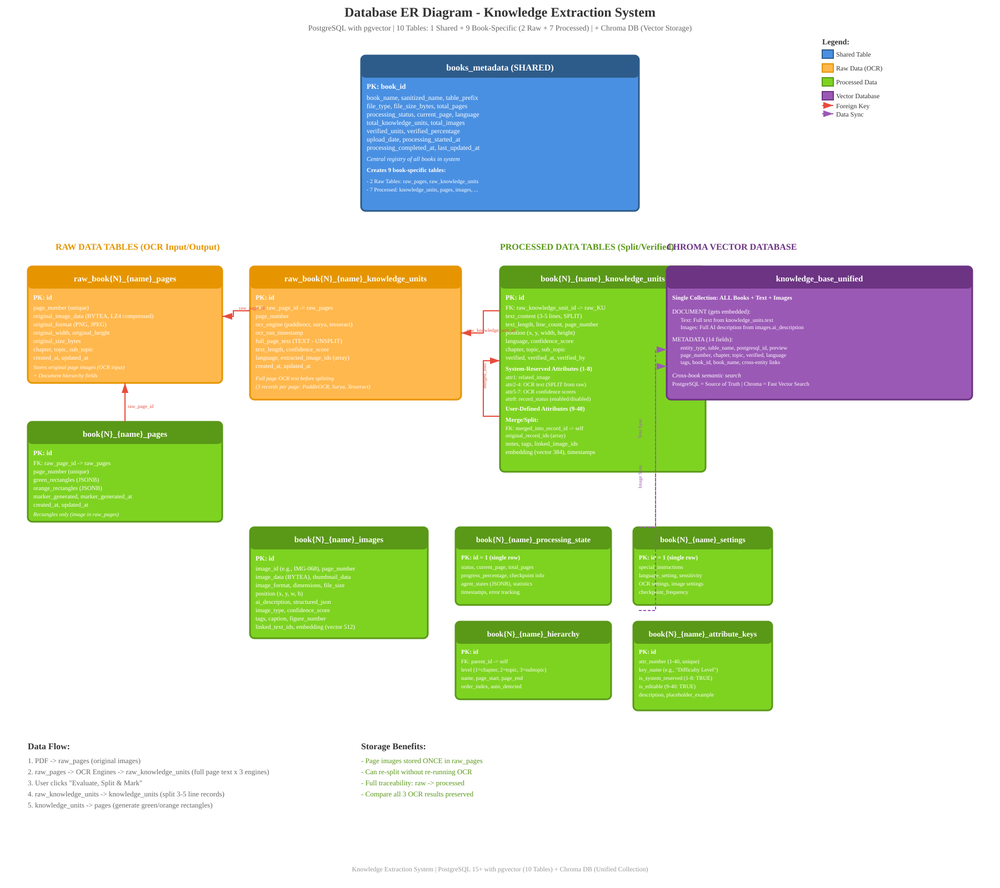
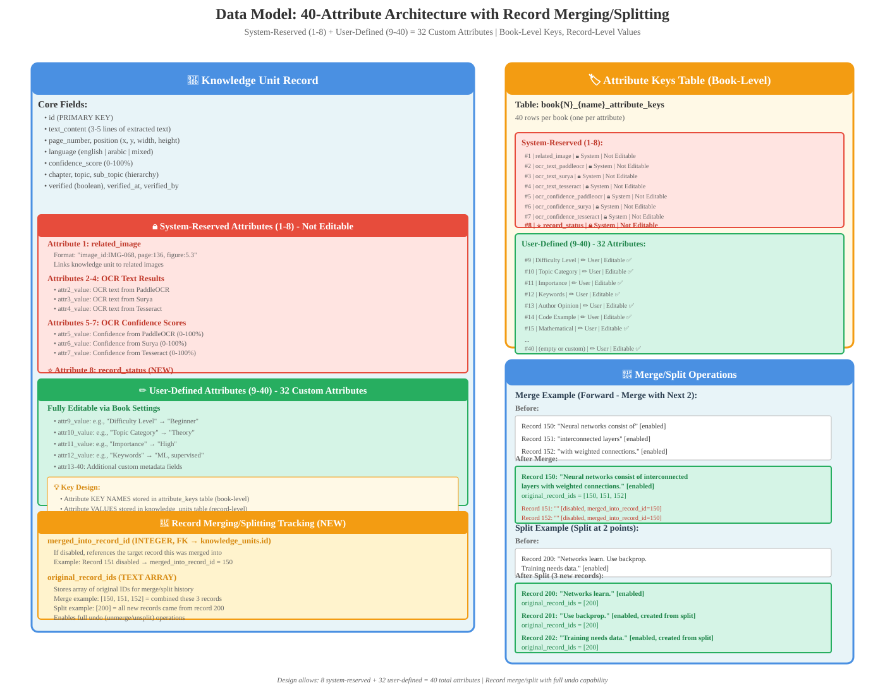

(1 Shared + 9 Book: 2 Raw + 7 Processed)
(8 System + 32 User)
(5 Before + Current + 5 After)
(Forward or Backward)
Database Entity-Relationship Diagram
Overview
The Knowledge Extraction System uses a dual-database architecture with PostgreSQL + pgvector for the primary relational database and Chroma DB with a unified collection for cross-book semantic search.
📚 1 Shared Table
books_metadata tracks all books in the system with processing status, verification progress, and metadata.
📁 2 Raw Data Tables
Each book gets 2 raw tables: raw_pages (original images) and raw_knowledge_units (OCR output before splitting).
📖 7 Processed Tables
Each book gets 7 processed tables: knowledge_units, pages, images, processing_state, settings, hierarchy, attribute_keys.
🔮 Chroma DB
Single unified collection (knowledge_base_unified) for ALL books, text, and images with semantic search.
🎯 Key Design Decisions:
- Two-Tier Architecture: Raw data (OCR input/output) separated from processed/split data for re-processing without re-OCR
- Dual Storage: PostgreSQL = source of truth (CRUD) | Chroma = optimized vector search (cross-book semantic queries)
- Unified Collection: Single Chroma collection for all books enables cross-book discovery and unified query interface
- Table Isolation: Book-specific PostgreSQL tables prevent cross-contamination and enable parallel processing
- pgvector Extension: 384-dimension embeddings stored in both PostgreSQL and Chroma for redundancy
- JSONB Fields: Flexible storage for agent states, rectangle coordinates, and structured image data
🔮 Chroma DB: Unified Vector Collection
- Collection Name:
knowledge_base_unified(single collection for ALL books) - DOCUMENT: Full text (from knowledge_units) or full AI description (from images) - gets embedded
- METADATA: 14 fields including entity_type, table_name, postgresql_id, chapter, verified, tags, book_id
- Use Cases: Cross-book semantic search, find similar content across all books, unified text+image search
- Sync Strategy: PostgreSQL → Chroma after create/update, eventual consistency with daily reconciliation

Data Model: 40-Attribute Architecture
40-Attribute System Design
The system uses a two-tier attribute architecture:
- Book-Level: Attribute KEY NAMES stored in
attribute_keystable (40 rows per book) - Record-Level: Attribute VALUES stored in
knowledge_unitstable (attr1_value through attr40_value columns)
🔒 System-Reserved (1-8)
Attributes 1-8 Not editable by users. Reserved for OCR metadata and record status tracking.
- Attr 1: related_image (links to images)
- Attr 2-4: OCR text from 3 engines
- Attr 5-7: OCR confidence scores
- Attr 8: ⭐ record_status (enabled/disabled)
✏️ User-Defined (9-40)
32 Attributes Fully customizable. User sets key names during upload or via Book Settings page.
- Difficulty Level, Topic Category
- Importance, Keywords, Author Opinion
- Code Example, Mathematical, etc.
- Empty key_name = attribute hidden in UI
🔄 Merge/Split Tracking
NEW Feature Two columns enable full merge/split operations with undo capability.
merged_into_record_id: FK to target recordoriginal_record_ids: Array of original IDs- Merge: Up to 5 records forward/backward
- Split: Unlimited split points
💡 Attribute 8: record_status (NEW)
Values: "enabled" (default) | "disabled" (merged)
Purpose: Controls record visibility in verification interface. Disabled records are hidden by default but can be shown via filter toggle.
Usage: When records are merged, source records marked as disabled, target record remains enabled.
Record Merging Workflow
Example: Merge current record (150) with next 2 records (151, 152)
- User selects "Merge with Next 2" in verification interface
- System concatenates text:
text_150 + " " + text_151 + " " + text_152 - Target record 150:
text_content= combined textoriginal_record_ids= [150, 151, 152]attr8_value= "enabled"
- Source records 151, 152:
text_content= "" (cleared)merged_into_record_id= 150attr8_value= "disabled"
- Undo: Restore original text to 151, 152; set all to "enabled"
Record Splitting Workflow
Example: Split record 200 at 2 character positions → 3 new records
- User marks 2 split points in text via UI
- System creates 3 text segments from original
- Record 200 (original):
text_content= first segmentoriginal_record_ids= [200]
- Records 201, 202 (new):
text_content= segments 2 and 3original_record_ids= [200]- All metadata copied from original
- Undo: Recombine all 3 records back to record 200

Key Features Summary
📊 10 Tables Total
1 shared (books_metadata) + 9 book-specific: 2 raw + 7 processed
🏷️ 40 Attributes
8 system-reserved + 32 user-defined custom attributes
🔄 Merge/Split
Context view (11 records), merge up to 5 forward/backward, unlimited splits
↩️ Full Undo
Complete history tracking enables unmerge and unsplit operations
🔍 Filter Toggle
Show enabled only (default), all records, or disabled only
🎯 Attribute 8
record_status: "enabled" or "disabled" for merge tracking
🔒 System-Reserved
Attributes 1-8 locked (OCR metadata + record status)
✏️ User-Editable
Attributes 9-40 fully customizable via Book Settings
📦 Two-Tier Architecture
Raw OCR data (input/output) separate from processed split records
♻️ Re-Split Without OCR
Raw OCR text preserved - can re-split without re-running OCR engines
🗄️ PostgreSQL + pgvector
Primary database with 384-dim embeddings (source of truth)
🔮 Chroma DB Unified Collection
Single collection for cross-book semantic search (text + images)
🔗 Self-Referencing FKs
Hierarchy parent-child, merge tracking in knowledge_units
📏 11-Record Context
Verification interface shows 5 before + current + 5 after
💾 Indexes Optimized
Indexes on record_status, merged_into, page_number, verified